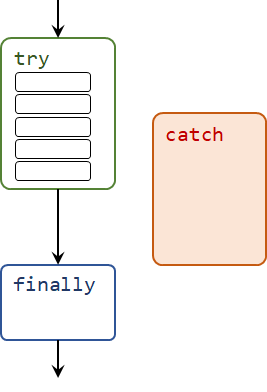
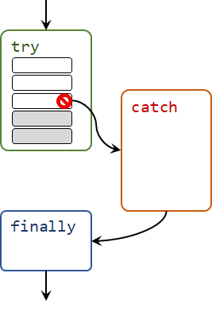
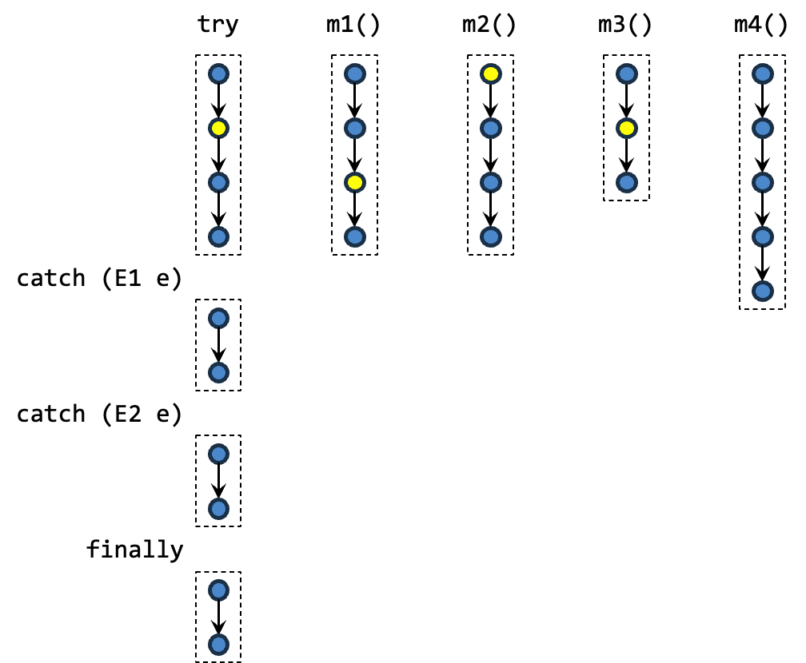
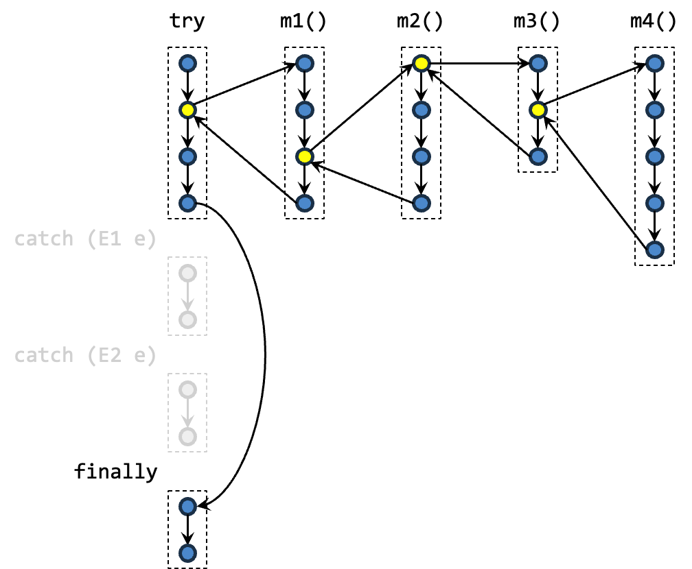
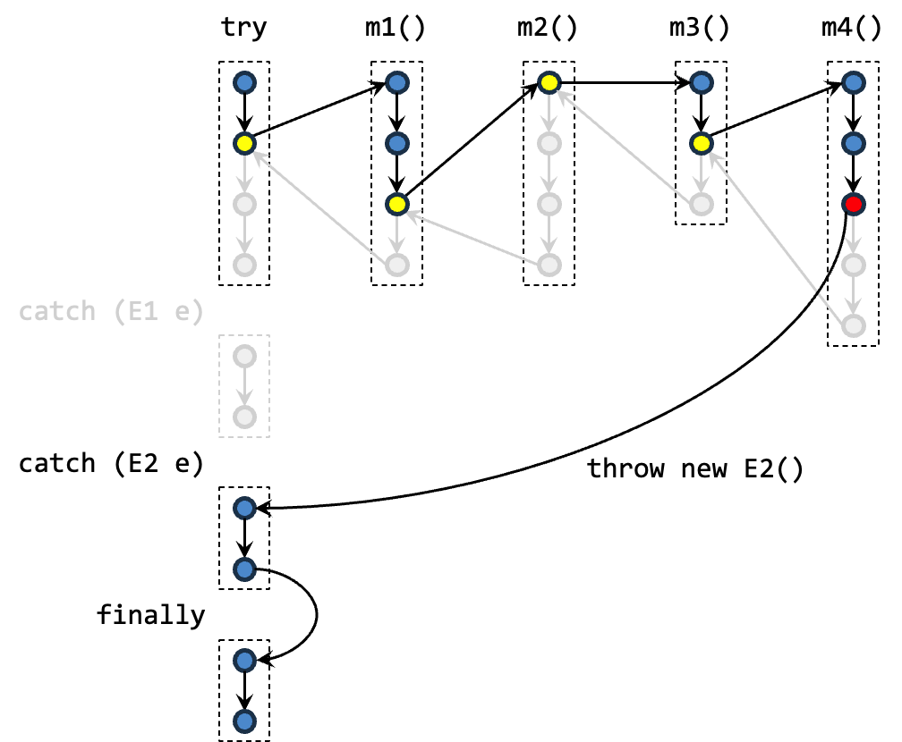
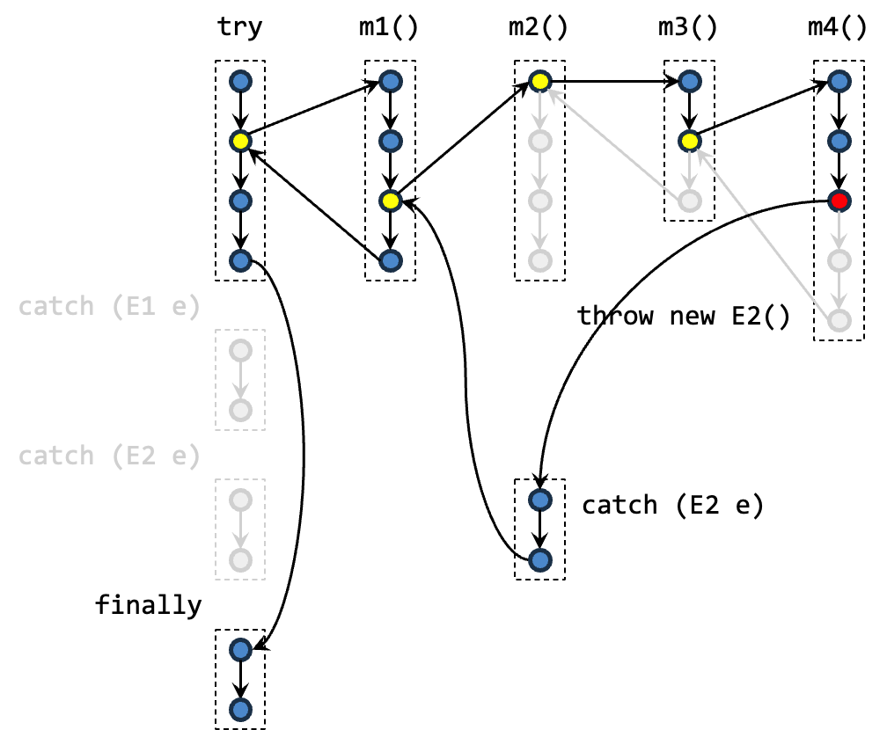

Unit 22: Exceptions
Learning Objectives
Students should
- understand about handling java exceptions and how to use the
try-catch-finallyblocks. - understand the hierarchy of exception classes and the difference between checked and unchecked exceptions.
- be able to create their own exceptions.
- understand the control flow of exceptions.
- be aware of good practices for exception handling.
Checking Exceptions
One of the nuances of programming is having to write code to deal with exceptions and errors. Consider writing a method that reads in a single integer value from a file. Here are some things that could go wrong:
- The file to read from may not exist.
- The file to read from exists, but you may not have permission to read it.
- You can open the file for reading, but it might contain non-numeric text where you expect numerical values.
- The file might contain fewer values than expected.
- The file might become unreadable as you are reading through it (e.g., someone unplugs the USB drive).
In C, we usually have to write code like this:
1 2 3 4 5 6 7 8 9 10 11 12 13 14 15 16 17 18 19 20 21 22 23 | |
Out of the lines above, only TWO lines correspond to the actual task of opening and reading in a file, the others are for exception checking/handling. The actual tasks are interspersed between exception checking code, which makes reading and understanding the logic of the code difficult.
The examples above also have to return different values to the calling method, because the calling method may have to do something to handle the errors. Note that the POSIX API has a global variable errno that signifies the detailed error. First, we have to check for different errno values and react accordingly (we can use perror, but that has its limits). Second, errno is global, and using a global variable is a bad practice. In fact, the code above might not work because fprintf in Line 3 might have changed errno.
Finally, there is the issue of having to repeatedly clean up after an error -- here we fclose the file if there is an error reading, twice. It is easy to forget to do so if we have to do this in multiple places. Furthermore, if we need to perform a more complex clean up, then we would end up with lots of repeated code.
Many modern programming languages support exceptions as a programming construct. In Java, this is done with try, catch, finally keywords, and a hierarchy of Exception classes. The try/catch/finally keywords group statements that check/handle errors together making code easier to read. The Java equivalent to the above is:
1 2 3 4 5 6 7 8 9 10 11 12 13 14 15 16 17 18 | |
if-else vs try-catch
As much as possible, you should try checking for potential error condition using if-else as opposed to try to let it run and catch error using try-catch. You may wonder in the case of reading file, why not just check if the file exists instead of catching FileNotFoundException. Something along the line of
1 2 3 4 5 6 | |
You do not need to understand the detail of the code above. What you need to know to answer this is that your computer runs a lot of other programs. Given the current processor capabilities, these programs may actually run at the same time. This means that in between the check that the file exists (i.e., f.exists()) and what you want to do with the file (i.e., in between f.exists() and f.open()), the file may actually already be removed by another program!
Such occurrences is rare, but we still need to safeguard against it. The surest way to know if we can actually read a file is to actually attempt to try to read a file.
Let's look at the example more carefully. The general syntax for try-catch- finally is the following:
1 2 3 4 5 6 7 8 | |
try Block
In the example above, we have the try block:
1 2 3 4 5 6 | |
which opens the file and reads an integer from it. Thus the main task for the code is put together in one place, making it easier to read and understand (and thus less bug-prone).
1 2 3 4 5 6 7 8 | |
catch Block
The error handling comes under the catch clauses, each handling a different type of exception. In Java, exceptions are instances that are a subtype of the Exception class. Information about an exception is encapsulated in an exception instance and is "passed" into the catch block. In the example above, e is the variable containing an exception instance.
With the exception, we no longer rely on a special return value from a function nor a global variable to indicate exceptions.
1 2 3 4 5 | |
finally Block
Finally, we have the optional finally clause for house-keeping tasks. Here, we close the scanner if it is opened.
In cases where the code to handle the exceptions is the same, you can avoid repetition by combining multiple exceptions into one catch statement:
1 2 3 | |
finally is ALWAYS Executed
Note that when we say that finally block is always executed, we really mean that it is always executed. In fact, the only time when finally is not executed is when the error is so fatal that your program cannot even recover from such error (e.g., your computer shut off or a meteor strikes your computer just before it reaches the finally block).
Try the following counter-intuitive example to show that finally is always executed. First, try to guess what the output is likely to be. Then, run the code to see what the output really is.
1 2 3 4 5 6 7 8 9 10 11 12 13 14 15 16 17 18 19 | |
Throwing Exceptions
The try-catch-finally blocks above show you how to handle exceptions. Let's see how we can throw an exception. Let's revisit our Circle class. A circle cannot have a negative radius. Let's say that we wish our constructor to throw an IllegalArgumentException when a negative radius is passed in.
We need to do two things. First, we need to declare that the construct is throwing an exception, with the throws keyword. Second, we have to create a new IllegalArgumentException object and throw it to the caller with the throw keywords.
1 2 3 4 5 6 7 8 9 10 11 12 | |
Note that executing the throw statement causes the method to immediately return. In the example above, the initialization of the center c and radius r does not happen.
The caller then can catch and handle this exception:
1 2 3 4 5 | |
throw vs throws
The keyword throws is used in method declaration. The keyword throw is the actual throwing of exceptions.
Checked vs Unchecked Exceptions
Java distinguishes between two types of exceptions: checked and unchecked.
Unchecked Exceptions
An unchecked exception is an exception caused by a programmer's errors. They should not happen if perfect code is written. IllegalArgumentException, NullPointerException, ClassCastException are examples of unchecked exceptions. Generally, unchecked exceptions are not explicitly caught or thrown. They indicate that something is wrong with the program and cause run-time errors.
In Java, unchecked exceptions are subclasses of the class RuntimeException.
Checked Exceptions
A checked exception is an exception that a programmer has no control over. Even if the code written is perfect, such an exception might still happen. The programmer should thus actively anticipate the exception and handle them. For instance, when we open a file, we should anticipate that in some cases, the file cannot be opened. FileNotFoundException and InputMismatchException are two examples of is an example of a checked exception. A checked exception must be either handled, or else the program will not compile.
Execution
Consider the general syntax for try-catch-finally above. We have two possible execution pathways assuming no error escaped. The first possibility is that // do something does not have a run-time error. The second possibility is //do something has a run-time error. We call the first normal execution and the second error execution.
There are other possibilities when we consider cases where the error escaped from the current context. This can either be because the catch block does not catch the required exception or because the catch/finally block themselves have a run-time error! As there can be too many possibilities, we restrict ourselves to cases where the error does not escape. in "Passing the Buck", you will see the execution when the error escaped.
Normal Execution
A normal execution is illustrated by the following flow.

Here, the catch block is not executed because there is no run-time error. Since finally block is always executed, the execution continues to the finally block after the execution of try block is completed.
Error Execution
An error execution is illustrated by the following flow.

We assume that the catch block is catching the required exception. We also assume that the line that causes the error is the third line (out of five lines) of try block.
First note that because the error is caused by line 3, all subsequent lines in the try block is not executed. Instead, the execution continues to the catch block. Since we may have many possible catch blocks, we look one-by-one from top to bottom for the first catch block such that the run-time type of the exception is a subtype of the exception declared by the catch block.
Next, the execution continues from the catch block to the finally block because the finally block is always executed.
Catching Order
Recall that in our explanation for the execution above, we mentioned that the catch block executed is the first one from the top such that the run-time type of the exception is a subtype of the exception declared in the catch block. Let us illustrate this more concretely. So if ExceptionX <: ExceptionY and we have the following catch block
1 2 3 4 5 6 7 | |
Then we will never catch ExceptionX because it will already be caught by catch(ExceptionY e) { .. }. In fact, Java compiler will complain about this with a compilation error.
1 2 3 4 | |
What this also means is that if you have the following catch block
1 2 3 4 5 | |
it will handle all exceptions! Also, it cannot be above other catch blocks that handles the subclass of Exception. That rules out all exceptions1!
Passing the Buck
The caller of the method that generates (i.e., new and throws) an exception need not catch the exception. The caller can pass the exception to its caller, and so on if the programmer deems that it is not the right place to handle it.
An unchecked exception, if not caught, will propagate automatically down the stack until either, it is caught or if it is not caught at all, resulting in an error message displayed to the user.
For instance, the following toy program would result in IllegalArgumentException being thrown out of main and displayed to the user.
1 2 3 4 5 6 7 8 9 10 11 | |
A checked exception, on the other hand, must be handled. Consider the following example:
1 2 3 4 5 6 7 8 9 | |
This program won't compile because the checked exception FileNotFoundException is not handled. That's why it is called checked exception, because the compiler checks that the error is either handled or passed upwards the call stack. As the example we have seen, we could handle it in openFile. In this case, openFile does not throw any exception.
1 2 3 4 5 6 7 8 9 10 11 12 13 | |
Alternatively, openFile can pass the buck to the caller instead of catching it.
1 2 3 4 5 6 7 8 9 10 11 12 13 | |
Sometimes the caller is a better place to handle the exception. Where an exception should be handled is a design decision. We will see some considerations for this later in this unit.
What should not happen is the following:
1 2 3 4 5 6 7 8 9 | |
In the code above, every method passes the buck around. No one takes the responsibility to handle it and the user ends up with the exception. The ugly internals of the program (such as the call stack) is then revealed to the user.
A good program always handle checked exception gracefully and hide the details from the users.
Control Flow of Exceptions
Here is a more detailed description of the control flow of exceptions. Consider we have a try-catch-finally block that catches two exceptions E1 and E2. Inside the try block, we call a method m1(); m1() calls m2(); m2() calls m3(), and m3() calls m4().
We highlight method invocation with yellow dot. In other words, there will be arrows out from yellow dot to another method. At the end of the execution of that method, the arrow will return back to the yellow dot. Additionally, each dashed line corresponds to a block (i.e., enclosed in curly bracket).

1 2 3 4 5 6 7 8 9 | |
1 2 3 4 5 6 7 8 9 10 11 12 13 14 15 16 17 18 19 20 21 22 23 24 25 | |
First, notice that we typically put "guards" around the throw statement. Otherwise, the exception is always thrown.
As for the execution, in a normal (no exception) situation, the control flow looks like this:

The statements in the try block are executed, followed by the statements in the finally block.
Now, let's suppose something went wrong deep inside the nested call, in m4() as represented by the red dot. One of the statement executes throw new E2();, which causes the execution in m4() to stop. JVM now looks for the block of code that catches E2, going down the call stack, until it can find a place where the exception is handled. In this example, we suppose that none of m1()-m4() handles (i.e., catch) the exception. Thus, JVM then jumps to the code that handles E2. Finally, JVM executes the finally block.
Note that the finally block is always executed even when return or throw is called in a catch block.

So the reason why the execution jumps from the call frame of m4() directly to the catch(E2 e) is because in between them there are no other catch blocks. Should there be a catch(E2 e) in m2(), then the execution jumps from m4() to m2(). Afterwards, the execution continues normally from the catch(E2 e) block in m2(). This is illustrated below.

Creating Our Own Exceptions
If you find that none of the exceptions provided by Java meet your needs, you can create your own exceptions, by simply inheriting from one of the existing ones. But, you should only do so if there is a good reason, for instance, to provide additional useful information to the exception handler.
Here is an example:
1 2 3 4 5 6 7 8 9 10 11 12 13 14 15 16 17 | |
Overriding Method that Throws Exceptions
When you override a method that throws a checked exception, the overriding method must throw only the same, or a more specific checked exception, than the overridden method. This rule follows the Liskov Substitution Principle. The caller of the overridden method cannot expect any new checked exception beyond what has already been "promised" in the method specification.
Good Practices for Exception Handling
Catch Exceptions to Clean Up
While it is convenient to just pass the buck and let the calling method deals with exceptions ("Hey! Not my problem!"), it is not always responsible to do so. Consider the example earlier, where m1(), m2(), and m3() do not handle exception E2. Let's say that E2 is a checked exception, and it is possible to react to this and let the program continues properly. Also, suppose that m2() allocated some system resources (e.g., temporary files, network connections) at the beginning of the method, and deallocated the resources at the end of the method. By not handling the exception, the code that deallocates these resources does not get called when an exception occurs. It is better for m2() to catch the exception, handle the resource deallocation in a finally block. If there is a need for the calling methods to be aware of the exception, m2() can always re-throw the exception:
1 2 3 4 5 6 7 8 9 10 | |
Do NOT Catch-Them-All!
Sometimes, you just want to focus on the main logic of the program and get it working instead of dealing with the exceptions. Since Java uses checked exceptions, it forces you to handle the exceptions, or else your code will not compile. One way to quickly get around this is to write:
1 2 3 4 5 | |
to stop the compiler from complaining. DO NOT DO THIS. Since Exception is the superclass of all exceptions, every exception that is thrown, checked or unchecked, is now silently ignored! You will not be able to figure out if something is wrong with your program. This practice is such a bad practice that there is a name for it -- this is called Pokemon Exception Handling2.
Do NOT Overreact
Do not exit a program just because of an exception. This would prevent the calling function from cleaning up their resources. Worse, do not exit a program silently.
1 2 3 4 5 | |
Do NOT Break Abstraction Barrier
Sometimes, letting the calling method handle the exception causes the implementation details to be leaked, and make it harder to change the implementation later.
For instance, suppose we design a class ClassRoster with a method getStudents(), which reads the list of students from a text file.
1 2 3 4 5 6 | |
Here, the fact that a FileNotFoundException is thrown leaks the information that the information is read from a file.
Suppose that, later, we change the implementation to reading the list from an SQL database. We may have to change the exception thrown to something else:
1 2 3 4 5 6 | |
The caller will have to change their exception handling code accordingly.
We should, as much as possible, handle the implementation-specific exceptions within the abstraction barrier.
Do NOT Use Exception As a Control Flow Mechanism
This is probably the most commonly seen mistakes among new programmers. Exceptions are meant to handle unexpected errors, not to handle the logic of your program. Consider the following snippet:
1 2 3 4 5 | |
We use an if condition to handle the logic. Some programmers wrote this:
1 2 3 4 5 | |
Not only is this less efficient, but it also might not be correct, since a NullPointerException might be triggered by something else other than obj being null.
Relevant XKCD

The Error class
Java has another class called Error for situations where the program should terminate as generally there is no way to recover from the error. For instance, when the heap is full (OutOfMemoryError) or the stack is full (StackOverflowError). Typically we don't need to create or handle such errors. In fact, because handling exceptions/errors require memory, we may not even be able to handle OutOfMemoryError.
Exception and Error shares a common superclass called Throwable. In fact, only objects that are instances of this class or its subclasses can be thrown by the throw statement or caught by the catch block. The hierarchy is shown in the class diagram below.

try-catch-finally inside finally
One of the quirk of Java is that you may encounter code where try-catch-finally inside finally is a necessity. This may happen when you are reading file using FileReader class. Your code may look like the following
1 2 3 4 5 6 7 8 9 10 11 12 | |
That looks like a perfectly reasonable code except for the fact the file.close() may actually throw an IOException. Since IOException is a checked exception, you must either handle the exception or pass the buck. To handle the exception, the code requires nested try-catch-finally.
1 2 3 4 5 6 7 8 9 10 11 12 13 14 15 16 17 | |
So there you have it, a nested try-catch-finally and something that cannot even be considered to be a bad practice. Luckily, we do not use FileReader in this module.
-
Exceptionhas a superclass calledThrowable. You can also catch aThrowable. Although the name has a suffix "-able", it is not an interface but an actual class. ↩ -
An even worse offence would be to
catch(Throwable t). The only exception to this rule (pun intended) is when you are writing code for system that must NEVER shut down like a nuclear power plant or an airplane midflight. Then by all means, catch a throwable and don't cause a nuclear meltdown or planes crashing down. ↩